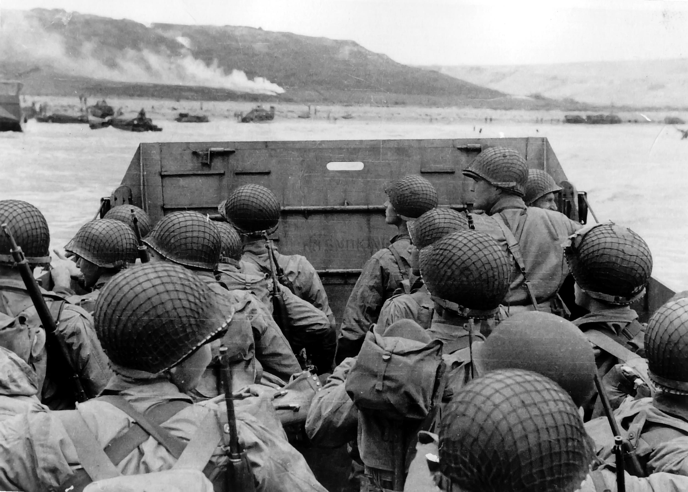

A Mystery Wrapped In An Enigma
During warfare, one of the key aspects of communications is the ability to transmit messages within the military and allies in utter secrecy and security. Today this is fairly easy with the plethora of high-tech digital encryption systems that are available. However, during World War II, the need for secrecy forced allies and enemies alike to develop their own various forms of encrypted communication. The methods used were numerous. They included traditional practices such as placing spies and sending trained carrier pigeons, as well as newer electronic encryption systems. When the Germans developed a new machine, they thought it was completely undecipherable.
The German machine was known as Enigma. It resembled a typewriter that could produce highly encrypted text messages. To use the Enigma, the operator first typed the text. Then, by turning a few wheels, they could scramble the message through the machine. On the receiving end, the other operator would need to set their machine with the same wheel or rotor order to unscramble the message. Codebooks were distributed to message operators so that they could enter in the correct decryption key when receiving a transmission. Originally the Enigma had been invented for commercial purposes, before the German military saw its obvious potential.
In theory, if the Germans had stuck to strong standardized operating procedures, their codes would indeed have proven almost impossible to decipher. However, they became careless when it came to this aspect, which ultimately became the main weakness that helped the Allies to decrypt the codes. As the German troops were attacking fast and relentlessly, it became vital for the Allies to intercept and decrypt their intelligence. At the end of 1932, the Cipher Bureau in Poland obtained an Enigma machine. They shared their information with the British and French to develop code-breaking techniques. To create a dedicated effort towards this end, the British government set up the Code and Cipher School, located in Buckinghamshire’s Bletchley Park. There, they brought in experts in mathematics, logic, and problem solving. These new recruits worked together to create prototypes of electronic machines (comparable to computers) to produce decryption on a larger and faster scale. They kept these efforts highly secretive so that word would not leak to the German forces. Still believing their codes to be fully secure, the Germans had by this time adopted the Enigma ciphers within their army, navy, air force, and secret services. In the early days, a few ciphers were cracked but revealed little helpful information. In 1941, new decryptions revealed information about Germany’s plans for invading Greece. Soon after, the experts at Bletchley decrypted secret intelligence regarding the Italian navy, resulting in an Allied victory during the Battle of Cape Matapan.
Subsequently, further messages that were intercepted and decoded helped the Allied troops gain a significant advantage. Even after the war, these encoded communication machines and techniques greatly influenced a number of other areas, especially in the field of computer science and electronic communications.
See more in: ShoreTel
Home